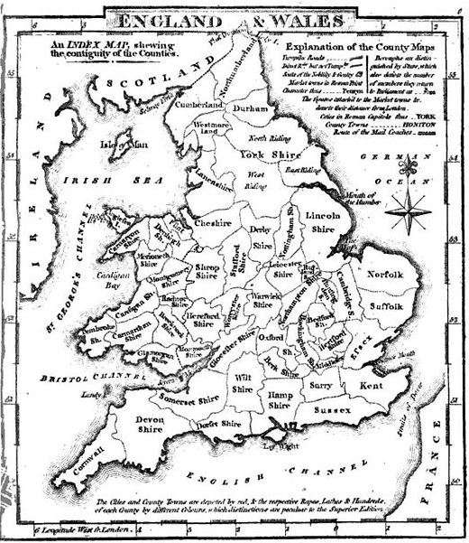

Maps

Shropshire
Mining Regions of Wales
Map corresponding to 1841 or 1851 British Census
L.D.S. Branches (circa 1845-1850) – from “Unidentified Pioneers – Staffordshire Branches”
“Mormon Congregations of Wales”
Links
British Mission and Early Mormon Missionaries - https://history.lds.org/missionary/mission/british?lang=eng
Missionary Thomas Dunlop Brown, who baptized Robert’s fellow passenger, Thomas Davies - https://history.lds.org/missionary/individual/thomas-d-dunlop-brown-1807?lang=eng
Welsh Mormon History - http://welshmormon.byu.edu/Immigrants_Listing.aspx
British Mission - https://history.lds.org/missionary/mission/british?lang=eng
The Church in the British Isles - http://www.lightplanet.com/mormons/daily/history/british/html.